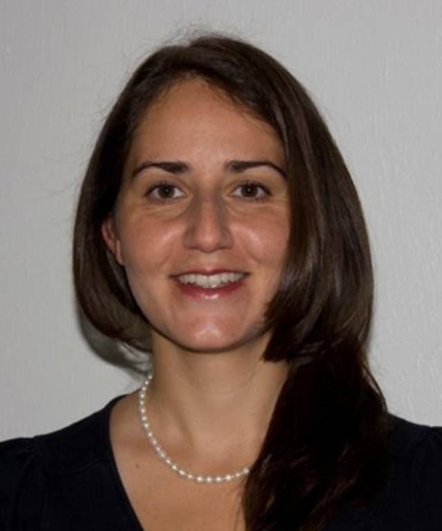

People
Meet our organizers, members, and collaborators advancing NLP research
🌟 Our Research Community
We bring together researchers, practitioners, and students from across disciplines to advance natural language processing and its applications to social sciences.
250+
Mailing List Members
15+
Institutions
Weekly
Meetings
👑 Organizers
Anthony Hills
Postdoctoral Research Assistant
Queen Mary University of London & The Alan Turing Institute
Queen Mary University of London & The Alan Turing Institute
Anthony leads the NLP Special Interest Group and coordinates speaker invitations,
event planning, and community engagement. His research focuses on computational
approaches to time series analysis and mental health applications.
Research Interests:

Maria Liakata
Professor & Turing Fellow
Queen Mary University of London & The Alan Turing Institute
Queen Mary University of London & The Alan Turing Institute
Maria is a Professor with expertise in natural language processing, machine
learning, and computational social science. She provides strategic guidance and
research leadership for the NLP SIG. Maria also leads the LongNLP research group, which focuses on
longitudinal phenomena in natural language and temporal modeling.
Research Interests:

Guneet Singh Kohli
PhD Student
Queen Mary University of London
Queen Mary University of London
Guneet is a PhD student and researcher in Maria's LongNLP group, focusing on
interpretability and reasoning in large language models. He contributes to
organizing technical discussions and coordinates with industry partners for the NLP
SIG.
Research Interests:
Yuxiang Zhou
Postdoctoral Research Assistant
Queen Mary University of London
Queen Mary University of London
Yuxiang is a postdoctoral researcher in Maria's LongNLP group, working on natural
language processing and large language models. He helps organize reading groups and
tutorial sessions for the NLP SIG, contributing to research coordination and
community outreach efforts.
Research Interests:
🎓 Past Organizers
Adam Tsakalidis
Former Organizer
Previously: Queen Mary University of London & The Alan Turing Institute
Previously: Queen Mary University of London & The Alan Turing Institute
Adam was a Research Fellow who worked on temporally sensitive methods for natural
language processing. His work focused on capturing changes in longitudinal
user-generated textual data and studying their association with well-being over
time. His research interests spanned semantic change detection, sentiment analysis,
and applications in political and mental health domains.
Past Research Interests:
Dong Nguyen
Former Organizer
University of Utrecht
University of Utrecht
Dong was a previous organizer of the NLP Special Interest Group and played a key
role in establishing the group's early activities and community. She continues to be
an active member of the NLP research community.
Research Interests:
🤝 How to Join Our Community
Get Involved:
- Join our mailing list to receive updates about meetings and events
- Attend our weekly meetings every Thursday 4-5pm (UK time)
- Present your research or lead paper discussions
- Collaborate with other members on research projects
- Participate in reading groups and tutorial sessions
Contact: Reach out to Anthony at a.r.hills [at] qmul.ac.uk to get involved or learn more about the group.
We welcome researchers at all career stages, from graduate students to senior faculty, and from both academia and industry.